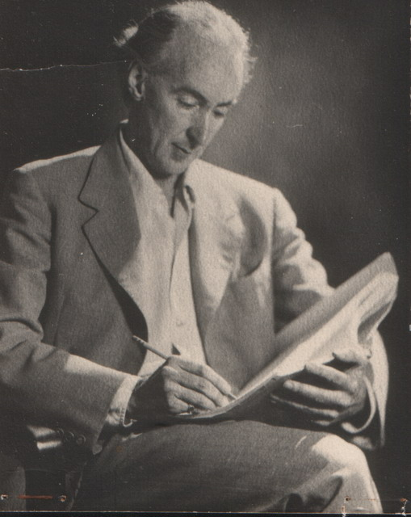
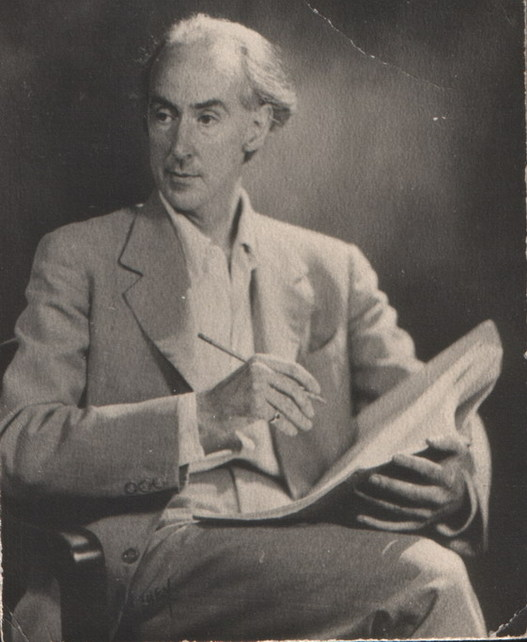

|
From a Notebook
 The following
pages are from the notebooks of Alan Harkness........
(includes unsourced quotations)
![Original task of drama to awaken voice of compassion, text:
Drama Danger of outer
pain o senses
Pride + Amozance Catharsis
compascion
V tear
Danger o inner back:
Egoism Original tash of drawn to waken
vice a conscience
Steine Ingens dramas
show the ape,
9 concience.
The donkee
The Guardian
#
The stages inadrama
1
Ten
Comprasion
и
I
Perception
Conscience
inwardly
3
wonde
A Consucence
productive
Conscunce
fortified
"This mean caled in Shat an eat a hasiast at to
that it
The mainial
Thren, in order
use again withis
RS. Berlin
19 05.](image/1/O3R_v6oMGxNS1P8osuA7ZQ403233/GW561H671.jpg "Original task of drama to awaken voice of compassion") " This was called the great world-tragedy, the
primordial drama: that the deity descended into the material
world and was buried therein, in order to rise again within
man."
" This was called the great world-tragedy, the
primordial drama: that the deity descended into the material
world and was buried therein, in order to rise again within
man."
R.S. Berlin 1905Notes
about the aims in our performances
To transform the everyday body so that it may move as
the expression of soul and spirit.
To transform the everyday speech so that the sounds
and rhythms of poetry become vocal and inevitable.
A word has its gesture.
A movement has its sound.
A true drama has its form which is
gesture-movement-sound-word.
There are studies which lead to these inner dynamics.
When achieved in a performance they make a strong impression on
an audience, even if it does not understand the actual language
of the speech. the deeper levels of the human being are touched,
not only the head understanding and sentiment.
With such means one can more faithfully reveal the
human tragi-comedy: awaken the emotions of the audience and in
the Aristotelian sense bring harmony into these emotions.
We believe that the sustenance given to the
audience-psyche by such a performance is of especial value in
our age when so much coarsens and deadens it.
Above all our aims are to move to tears and laughter;
to invoke by the magic of theatre the unsuspected angels and
even demons; and by the sympathetic participation of the
audience to bring about a transformation of human nature. If
only one could achieve it and if one dared say it:-
the theatre as an act of redemption.
This it certainly was at its greatest and can become
so again today.
***
The qualities we look for in the
student come under four main headings;
1. Actor's
Fire - Temperament - Imagination
2. Psychological Truth and
Characterisation
3. Bodily and Vocal Expressiveness and
Plasticity
4. Possibility of Development - Flexibility and
Openness to Suggestion.
Improvisations which call for
strong emotion are useful. Here are some suggestions:-
a)
On the edge of a cliff - the student sees someone dangerously
near its edge - it seems inevitable that the person will be
killed - the student rushes forward calling out to stop him.
This can be done in various atmospheres - storm, sunshine etc
and with various imaginary costumes.
b) A mother with her
dying child. She is exhausted having tended to it for days and
nights and now she waits, knowing nothing more can be
done.
c) The man who comes home to his newly wed wife and
finds her dead on the floor.
d) Walking about and speaking as
different characters shows many qualities.
e) Asking some
half dozen times 'What is the time?' justifying not
having heard the answer until about the 7th time calls forth
inventiveness and a feeling of truth.
f) We often ask the student to act his
piece with a different Atmosphere - Idea - Quality - Tempo to
judge flexibility. One or two phrases are often sufficient for
this purpose.
***
Penitence
On the prairie, on the shore
By the long marshes where there are only birds,
On the desert where only light moves
There will be a city
I shall bring it with me –
There will be also the man at the bar
Fumbled up in brown coats
And the butts of cigars
And banging on the counter with the tumbler
And the head of the taxi man turning
“Where to?” in the slush of the snow.
I shall bring this night also
Wherever I go.
Or shall I, in the dusk of the sun
At the cross between night and day
When the powerful flames spread up
And the great shining darkness begins
And the whole hymn is sung
And the sky is washed with all the colours
And the coming of the stars…
Shall I send up these penitent wretches
These cripples on crutches
These sad, lost people, send them up
Out of my eyes when sight is given to me
Out of my limbs when they are
whole?
***
Notes from Sprachgestaltung und
Dramatische Kunst
by Rudolf Steiner
(Lecture X The Mystery Character of D. Art)
..... Let us seek the source of drama within the
mystery-art, so that the seriousness of such a concept of drama
may enter into our ordinary dramas and into the actions of our
modern actors.
In the costume we see represented how the gods work
into human life. The course of such a drama portrayed events
that occurred among the Gods showing how these events affected
human life on earth. Everything on the stage was arranged so
that the spectators had the feeling: the Gods themselves have
descended to the stage with a part of their beings. This effect
was created by the chorus which spoke in a manner between
ordinary speech and singing, a special kind of recitative
accompanied by instruments. By these means a style was evolved
in sounds, syllables and sentence structures which lived before
the audience in the musical plastic pictorial word. This special
choral - chanting was capable of such variety and
individualisation that the different Gods could sound forth as
though incorporated.
Through such means the audience was able to
experience what we call 'fear' of the divine, awe and
dread, but they also felt that in their moral life, within their
souls, they dwellt among the Gods. These were the primary aims
of the old mysteries.
But the ability to perceive anything at all within
such an unnaturalistic stylisation gradually disappeared and man
placed himself upon the stage, substituting his own form for the
beings which could no longer be experienced through the musical
plastic pictorial word.
Let us look at the Egyptian Gods - as a rule they
were not adorned with insipid human faces but were given animal
faces which represent permanence in contrast to the the ever
changing human visage. The rest of their figures were human in
form to show their evolving natures, but a human face cannot
remain permanently immobile without becoming fixed and dead in
expression. So the Gods were given the unchanging animal mask to
represent their eternal qualities. Then we see how man - when he
first placed himself upon the stage as an individual -
representing the God as an individual - appeared with an animal
like mask. Thus the art of acting grew out of the mysteries.
......... Originaly man beheld the divine within
nature in thunder and lightning in the clouds, but also in the
impersonal sounding of the word through the chorus, but he felt
within himself the Divine spark echoing the outer manifestation.
He began to feel that when he represented his innermost being
this was also something divine. Thus the representation of this
inner spirituality evolved out of the drama of the Gods.
....... Today the actor must learn to stylise his
prose, and to carry his inner experiencs into the revellations
of the outer world. It is not enough if he behaves himself as he
would in ordinary life. One needn't go to the theatre to see
that because life itself is even so much richer than the few
meagre bits sifted out for the stage.
***
The following is a typed (and unsourced) inclusion
in the notebook.Exercises in Spiritual
Development
(General
demands to which one must set or apply
oneself)
First Exercise - Control of
Thinking
The
first condition is the acquirement of a perfectly
clear thinking. To this purpose one must - if only for a short
time in the day, some five minutes, (the longer and oftener the
better) free oneself from the will-o-wisp nature of thought. One
must become master of one's thought world. Oine is not
master if outer conditions, profession, some tradition, social
conditions, yes even belonging to a certain race, if day and
season determine one's thoughts and the carrying out of
them. So, through this exercise one must, with wholly free will,
empty the soul of the ordinary every day thought flow, and out
of one's own initiative urge a thought into the centre of
the soul. It need not be a dominant or interesting thought; what
is to be attained in an occult respect is even better attained
when one in the beginning endeavours to choose as uninteresting
a thought as possible. Thereby the self-active force of the
thought becomes more stimulated; while with an interesting
thought the interest carries on the thought itself. One says to
oneself: I start out with a thought (e.g. a pin) and link up
with it, through my own initiative, all that which can
reasonably be connected with it; through which fthe first
thought is obliged always to remain alive before the soul. This
exercise is to be pracised daily for a month. One can take a new
thought daily or keep to the same one for several days. After
each exercise one tries to bring to the full consciousness the
inner feeling or firminess and security, which with subtle
attention one will soon observe in the soul. One so concludes
this exercise by thinking of one's head and the spinal chord
down in the middle of the back, in such a way as if one would
let each feeling of firmness pour into this part of the
body.
Second exercise - Control of Action
When one has exercised for about a month in this
manner, a second demand steps in. One tries to invent any action
which in the ordinary course of life up to the present has quite
definitely not been taken up before. Now one performs this self
chosen exercise as a duty every day. It is very good to choose
an action which can be performed every day for as long a space
of time as possible. Again it is better when one begins with an
unimportant action to which one can, so to say, force oneself
(e.g. one undertakes at a certain time of day everyday to water
a plant, or look at the sky and the clouds in the same direction
or to observe an object.) After a time a second such action
should enter therein, after a time a third and so on, so manys
as one can pursue with the maintainance of all one's duties.
This exerise should again last a month but one shouldas much as
one can during this second month also occupy oneself with the
first month's exercise. But the second month's exercise
should come first, and it must never be interrupted even for one
day! All the same the first exercise and its effect must not be
lost sight of, otherwise one will soon observe how the fruits of
the first month are lost and the old backslide of
'uncontrollable thoughts' begins again. Above all one
must take care that these fruits, once won must not be lost
again. If one has produced through the second exercise a
such-like executed initiative-action, so will one, with subtle
attention, become conscious of a feeling of an inner activity
impulse within the soul and one will soon pour, as it were, this
feeling so into one's body that one lets it stream from the
head down into the heart.
Third Exercise - Equanimity
In the third month, should be pushed into the centre
of life, as a new exercise, the cultivation of a certain
equanimity - as opposed to fluctuation between joy and sorrow,
pleasure and pain; the exalting as high as heaven and grieving
to death should with consciousness be replaced by an equable
mood. One takes care that no joy runs away with one, no pain
smites one to the ground, that no experience rends one with
immoderate anger and vexation; no situation puts one out of
countenance; that no expectation fills one either with
anxiousness or joy and so on. One need not fear that such an
exercise makes one empty and lacking in the fullness of life.
One will rather observe much more in place of this that what
proceeds from the exercise brings forth refined qualities. Above
all one feels with subtle awareness one day, an inner peace;
also one pours this subtle feeling into one's body in that
one consciously lets it flow from the heart to the hands, feet
and finally the head. This naturally cannot be taken after each
single exercise for one has in truth not to do with one single
exercise but with a continual awareness of one's inner life.
But one must, at least once in the day, call before the soul
this inner peace and then undertake the exercise of the
streaming out from the head to the hands and feet.
Fourth Exercise - Positiveness/Seeking Good
In the fourth month one undertakes a new exercise
which may be called Positiveness. This consists in seeking out
continually the existing Good, Beautiful and Excellent in all
experiences, natures and things. This quality in respect to the
activity of the soul is best characterised by the Persian legend
of Christ Jesus and the dead dog. If the esoteric student does
this exercise he will soon observe that under cover of ugliness
a hidden beauty exists; that even in a criminal lies veiled a
hidden goodness, that in a lunatic somehow the divine lies
hidden. This exercise is connected with that which one calls
forbearance from criticism. Now, one must not comprehend it in
such a way that one would call black white or white, black. But
there is a difference between a judgement which proceeds merely
from one's own personality and its sympathies and
antipathies and a judgement which proceeds from the point of
view of lovingly putting oneself in the place of a foreign being
or stranger and without a single criticism, questioning oneself:
How does this thing or being come to this, so to be or so to
act? Then one comes to it gradually and quite of oneself to
strive to help the imperfect instead of merely criicising,
blaming or setting in order. The objection that life conditions
of many people require them to criticise, blame or judge cannot
be made here. There are, even many conditions present which make
it impossible to carry out an occult training as here indicated,
in any measure of fruitfulness. But here one should not
impatiently wish all the same to make progress which can only be
made under certain conditions. He who during a month can
consciously place positivity in all his experiences will, little
by little, observe a feeling in his inner being as if his skin
were porous from all sides and his soul open itself to all
secret and subtle events in the surroundings which before had
completely escaped his notice. Therefore the point is to combat
existing inattentiveness in man toward such subtle things. If
one has filled this described feeling of the soul with a kind of
beatitude then one so tries to draw his feeling towards the
heart in thoughts and from there to let it stream into the eyes
and out into space beyond and around the human being. Through
this one grows, as it were, above one's self. One learns to
observe a piece of one's surroundings as one observes a part
of oneself that contains a quite intimate relation to the
surroundings. A great deal of concentration is necessary for
this exercise and above all things a recognition of the fact
that all that is emotional, passionate and affected works
destructively against the indicated mood.
Fifth Exercise - Impartiality towards what Life
gives
In the fifth month then one tries to cultivate in
oneself the feeling of meeting in an entirely unprejudiced
manner, every new phenomenon. The esoteric student must
completely break with man's ordinary attitude toward what
comes to his hearing or to an occurence about which he then
says: 'I have never heard that or seen that; I heard
otherwise; I do not believe it.' The student must be ever
ready to accept a perfectly new experience even when it
contradicts his former experiences. For, all which hitherto he
has recognised as legitimate; what till now has appeared to him
as impossible - must not fetter him so that he be hindered in
his reception of a new truth. The esoteric student must ever
hold open the door for the belief that his hitherto existing
knowledge can always experience a widening. He who in the fifth
month is so minded to direct his attention on it will observe
that a feeling creeps into his sould as is in that space which
was spoken of in the previous exercise; something would come
alive, as if something would stir in it. This feeling is
extraordinarily fine and subtle. One must now try attentively to
grasp this subtle vibration in the surroundings and let it, as
it were, flow in through the skin in so far as the latter
contains the sense of warmth. Less attention is applied at this
stage towards impressions in the other senses, i.e. taste, smell
etc, for it is at this stage of development not yet possible to
distinguish the influences. Therefore the student leaves
attention on taste, smell, etc to a later stage.
Sixth Exercise: Perseverance
In the sixth month one tries systematically in a
regular alternation, again and again, to undertake all five
exercises. Gradually through this a fine equilibrium of the soul
is formed. One will especially observe that any existing
discontent with the concerns or phenomena of the world will
completely vanish. A propitiable mood arises in the soul in
regard to all experiences. This is in no way an indifference. On
the contrary the student qualifies essentially more than ever to
function improvingly and progressively in the world. A quiet
understanding unfolds itself for the things which earlier were
completely shut off from the soul. Even the gait and gestures of
a person alter under the influence of this exercise. And when,
even, a person can observe one day that his handwriting has
taken on another character then he may say that he is even now
about to reach another stage on the forward path. Once again two
things must be emphasised:
1) That this exercise has the power to paralyse the
unfavourable so that only the positive remains present - and
2) That this attitude alone really assures positive
success in Meditation and Concentration work.
The merely conscientious fulfillment of current
morals does not satisfy the esoteric student, for these morals
can be egoistic in so far as a person perhaps says to himself:
'I will be good so that I may be found good.' The
esoteric student does good, not because he wishes to be found
good but because he knows little by little that Good alone
brings forward the evolution of the world to its final goal and
that against this the Bad, Unwise and Ugly place continually
temporal hindrances in the path of evolution.
***
Notes on Pipwick (from studying engravings)
1. The characters are full of
temperament. They keep nothing inside but open
themselves in a lot of gestures, situations,
positions, etc. There is nothing restrained about
the characters or the situations. When a character
is restricted Dickens describes it as an exceptional
thing - ie the incident of the two restrained
gentlemen wherein one deliberately walked within the
eyes of the other.
2. In studying the engravings you will
see how the figures are expressing emotions. We must
act so that if the expression is to be shown on the
stage it must be shown with the whole body.
3. The manner in which they bow and do
everything is so particular - if you study the
engravings you will see what kind of movements must
be made. This will help you to wear the costumes in
the right manner.
4. One thing you must not take from the
engravings - the grimace.
5. Pay special attention to bridges and
transitions in the play. We must make everything
seem psychologically complicated - everything in
Dickens has been so compressed to such a point that
he looks at things through a microscope. In
imagining your characters imagine them as very
complicated - your acting must be the result of very
complicated work, although in the end we may do it
absolutely simply.
6. By studying the engravings you will
begin to feel that these people's lives are not
continuously flowing but are expressed by means of
bridges and transitions and points. Moving, stopping
and moving.
7. The settings will be slightly out of
perspective as suggested by the engravings - this
may also be true of the costumes.
8. There will also be an element of dust
about the costumes and settings so that they will
give an old appearance, although the colour will not
disappear. The audience must feel that it is a
'tasty dish'.
9. Do not look at the engravings from the
point of view of aesthetic or intellectual pleasure,
but really act them in your imagination. Re-live the
pictures and make them live for you.
10. Read the novel as well as the play.
***
'Duty, - when a man loves the commands he gives
to himself.' Goethe, Prose Aphorisms
'That which is fruitful alone is true.'
Goethe
***
The earth woke up again
– The earth woke up again –
You were waiting in a taxi stemmed by the traffic
headed
off and back and on
and those who called you did not know
your name
You answered – and your face was in the
glass,
and the earth died under the stones
and there
were many words and many words
and your heart beat in the
taxi
impatient to be dead, to sleep again
after the
torment of continuance
the chain of house to house
across the dead scowl
of the city
the grin……
Spring, summer,
winter, falling
without one fruit, one leaf returning
-
you still alive in the dead earth -
The earth woke up
again…
Hark at the noise all night
the cicadas
hark how it swells and swells and blooms
root under root
up-piercing
the ferny fringed bladed arrowing
sharp and
spreading billowed tapering
bell’d and hooded million
tongued,
wind lulled wind whipped fragrant million eyed
ears of the earth –
Listen! it wakes again
There is no house only windows
walls are leaf thin
and the city as the bloomed
skin
of an almost ripened fruit breaks open –
And
if you died the Earth would waken you –
Two dangers:-
The cosmic void:- loss of consciousness
The descent into one's own being:- egoism
(Greek Aeschylus tells of these dangers and how they
are overcome by infinite compassion for all creatures) These two
dangers overcome by Christ impulse.
***
The study of universe, earth and man must pass
over from theoretical consideration so that our own will and
enthusiasm may be fired for further development. What we
call 'future' must be rooted in the past; knowledge
has no value if not changed into motive power for the
future.
***

He who binds to himself a joy
Does the winged life destroy
But he who kisses joy as it flies
Lives in Eternity's sunrise
(William Blake)
|
|